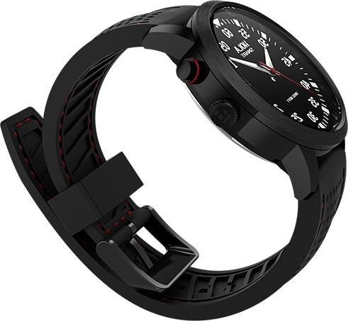

Toggle navigation
首页
产品
京东
APP下载
使用指南
关于我们
使用指南
用户协议

关于充电，首次使用请先充电
如何进行充电
采用专用充电夹，先将夹住手表，使充电夹触点和塑料凸台完全嵌入手表背后槽内， 再接通电压为5V的USB充电器（如手机充电器，不能使用移动电源），手表对电流有限制，不用担心对手表造成损害。建议使用正规充电器，山寨产品易引发安全隐患并会导致充电时间延长。
充电需要多久
充电时间大约需要3~4个小时。
注意，首次充电时需要的时间会更久一些，取决于剩余电量。
一般多久充一次电
正常使用30天左右。但是要注意，不要等电全部耗尽再充。各种震动、灯光提醒频繁会使待机时间缩短。
充电时的指示灯变化
6时灯充电时闪烁，充满后长亮
电池容量和剩余电量
内置90mAh锂聚合物电池电池。 剩余电量查询，点击APP“小C”底部中央的运动界面，点击右上角的设置按钮，即可查看剩余电量百分比
我的手表为什么耗电特别快
最耗电的是振动，其次是灯效，为延长待机时间，可在运动界面的设置中减少各类提醒
能否使用移动电源充电，为什么
不能。 移动电源充电对象是手机，其充电电流在1A左右，当手机充满电的时候，进入涓流充电状态，充电电流会变得很小，这时部分移动电源就会关断充电，以节省电量。 而手表充电电流最大是40mA的小电流，这就会使得部分移动电源误以为是手机已经充满，从而关断充电。因此，使用移动电源可能无法充电
充电时指示灯不亮如何处理
首先确保手表同充电夹正确接触(夹好后充电夹触电及突起部分应该完全嵌入手表背后槽内)，然后连接USB电源。
长期未充电的手表，可能需要先冲10分钟，再插拔USB接口一次才会亮指示灯。
确认使用正规厂家充电器并避免使用移动电源充电。
APP下载和安装
iOS APP下载(链接和二维码请见APP下载)
Apple APP Store搜索“小C”，安装即可
点击菜微信公众号菜单APP下载里的链接，下载“小C”安装后，会有提示“未受信任的企业级开发者”，请在“设置”>”通用”>“描述文件”>“ Veclink…”>“信任“Veclink…”，点击“信任”即可。
Android>直接下载 安装即可（链接和二维码请见APP下载)
APP安装注册 APP需要先注册后才能同产品配对使用
同智能手机手机连接配对和同步
支持的手机型号
苹果系统（蓝牙4.0+iOS7以上版本）5/5C/5S/6/6 Plus/4S (需iOS7.0以上) 安卓系统（蓝牙4.0+安卓4.3以上版本）
连接配对
点击APP底部的 ，点击连接设备按钮，设备开始查找设备 当显示“设备已连接”，说明已经找到手表，请等到显示请在设备端按确认键的提示，按2时的按键，或者晃动手表，确认绑定
手机App 无法搜索到产品：
若搜索手表时提示找不到手表，首先请确认手表是否有电，保持手表充电状态，试着连接手机； 其次请检查附近是否存在多个手表，请在绑定时远离其他类似手表； 关闭手机蓝牙，根据APP提示再次开启蓝牙，再次连接。 若前述方法都无法解决，请尝试重启手机，然后再连接。
运动目标设置
点击APP底部的 ，点击右上角的设置按钮进入设置界面，设定运动目标，也可以设置各类提醒，设置完毕会自动于手表同步。
同步
在 界面向下拉滑动界面，APP自动同步运动信息。
按键、指示灯和提醒
2时功能按键
消除手表端的提示LED； 根据时钟LED显示个数，近似显示运动目标完成百分表； 在遥控拍照时，作为拍照按键。
亏电、充电及电量提醒
4时灯：10% 电量时闪烁并振动；5%时闪烁，请尽快充电； 6时灯：充电闪烁、满电常亮。
手机配对和数据同步
1~12时灯： “小C”找到手表后，顺序亮起、熄灭，此时请晃动手表或者按2时功能按键； 数据同步时LED灯顺序闪烁。
来电提醒和短信提醒
短信提醒：1、2、3时灯闪烁并振动； 来电提醒： 10、11、12时灯闪烁并振动。
运动目标达成百分比：
按2时功能键，根据时钟LED亮的个数，近似显示运动目标完成百分表，也可在APP界面 中查看运动目标完成情况。
按功能键，表盘灯无显示：
通过APP同步，查看LED是否能够点亮，是否能够激活手表； 若没电，尝试充电10分钟后再次尝试； 长按2时功能键4秒，恢复出厂状态，会清除手表端数据，请慎用，需要重新配对。
关于记步
为什么已经开始行走，手表没有开始计步
为了减少误差我们设定了一个初始值，当实时步数大于初始值时，才会正式开始计步，APP主界面中实时步数才会有变化。
手表的计步功能和哪些因素有关
手表内置的加速度传感器和相关算法。计算的步数、运动距离、热量消耗同性别、身高、体重和年龄密切相关。第一次设定个人信息时，务必准确填写各项信息，稍微不准都会直接影响到加速度传感器的数据捕捉，进而影响算法运算，导致的结果则是计步不准、距离数据不对，消耗卡路里数值欠准度，从而得出不理想的数据，影响到您的个人运动数据。 您的摆臂姿势、步幅、身形、路面的平整度、上坡下坡都会影响到计步数值。
蓝牙不费电和延长待机时间
手机蓝牙一直开着，是否很费电
不会，手机上的蓝牙4.0就是为低功耗而生，远低于手机端的各种应用耗电。
为什么只能适配蓝牙4.0以上的手机
因为手表里使用了蓝牙4.0 BLE技术，所以手机里必须适配相应的蓝牙模块才可以正常建立连接，主要还是为了手表更省电。
说了那么多，我还是觉得开着蓝牙费电
好吧，关掉手机蓝牙也可以的，数据同步的时候再打开也不迟
手机蓝牙关闭后，手表的哪些功失效？
来电和短信提醒会失效，其他如震动闹钟、运动数据记录均不受影响，只是不能实时同步。
如何延长待机时间
在运动追踪页面 右上角设置中关闭各种提醒，可以大幅提升待机时间。
传统手表功能
手表表盘
传统3针表盘，分别显示时、分、秒
调整指针时间
轻轻拔出3时旋钮，调整表盘时间显示；调整完毕，务必将旋钮按到贴着机身，表针继续走动。
更换电池
内置手表机芯为独立纽扣电池，请找专业修表人士更换电池，避免影响手表防水性能。
遥控拍照、智能闹钟、久坐提醒
功能菜单
在运动追踪页面 右上角设置中可以找到这些功能。这些供能都能够在手表端进行提醒。
遥控拍照
首先确保手机和手表数据处于连接状态，数据可以同步 在遥控拍照界面摆放好手机，按2时功能键，即可拍照
防丢提醒
震动次数固定的，不能个人根据需要修改。
智能闹钟
使手表在脱离手机的情况下能够按周进行周期性振动提醒
事件提醒
使手表在脱离手机的情况下能够定时进行振动提醒
久坐提醒
使手表在脱离手机的情况下能够在一天里面间隔一定时段进行振动提醒
关于Hola
媒体报道
加入团队
购买渠道
微信直购
京东商城
开放平台
APP下载
关注我们
新浪微博
腾讯微博
法律与其他
常见问题